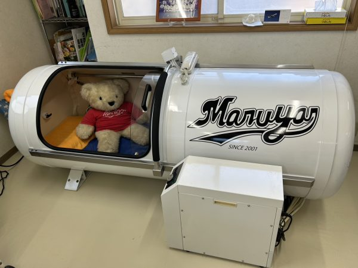
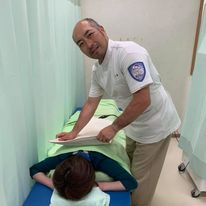
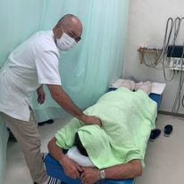

山梨県富士吉田市 の接骨院
からだの痛みに、丁寧な施術で向き合う。
捻挫・打撲・筋損傷(肉離れ)・骨折・脱臼まで、スポーツ選手の通院も多数。酸素カプセルによる疲労回復や、助産師監修の産後ケアにも対応しています。各種保険取り扱い・交通事故保険取扱店。
各種保険取扱
交通事故保険取扱店
スポーツ選手 多数通院

Since 2001
産後ケア・酸素カプセル完備
助産師監修の産後ケアと、疲労回復酸素カプセルをご用意しています。
1,505+
来院実績(人)
450日+
診療実施日数
Service
症状から選ぶ
お身体の状態やご希望に合わせて、施術メニューをご用意しています。
01

捻挫・打撲・筋損傷(肉離れ)・骨折・脱臼
交通事故によるケガにも対応。スポーツ選手の方も多く通院し、症状に合わせた丁寧な施術で早期の競技復帰・日常生活への回復をサポートします。
02
酸素カプセル
怪我を早く治すため、疲労回復酸素カプセルをご用意。高気圧・高濃度酸素により、回復と疲労軽減をサポートします。
03

産後ケア
開業以来、助産師監修のもと産後ケアを実施。出産を終えたお母様のお身体に寄り添う施術を行っています。
初めての方へ
「まるや接骨院は、地域の皆様に愛される接骨院を目指しております。」
1,505人+
来院実績
350件+
施術実績
450日+
診療実施日数
院長
渡辺 将
一人ひとりのお身体の状態とお悩みに向き合い、捻挫・打撲・骨折といったケガから、スポーツによる筋損傷、産後のお身体のケアまで、丁寧な問診と施術を心がけています。
「痛みを我慢せず、まずは気軽にご相談ください」をモットーに、地域のみなさまに寄り添う接骨院を目指しています。
院長 渡辺 将
News
お知らせ
休診情報・移転情報など、最新のお知らせをこちらに掲載しています。
Access
アクセス
お電話でのご予約・お問い合わせをお待ちしております。